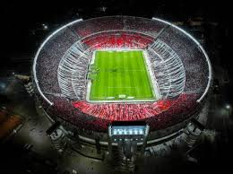
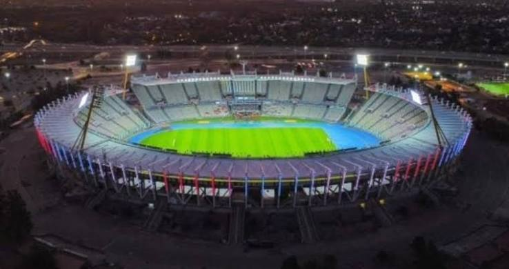

La cultura de los estadios
Los estadios de fútbol en Argentina no son simples estructuras de cemento; son templos urbanos y el corazón palpitante de la cultura popular del país. En la sociedad argentina, el estadio es un espacio de identidad, liturgia y pertenencia que moldea la vida cotidiana de millones de personas.
Sentido de pertenencia e identidad territorial
- Fronteras barriales: Los estadios definen la identidad de los barrios
- Herencia familiar: La asistencia al estadio es un rito de iniciación transmitido de generación en generación
- Refugio social: Funciona como un espacio democrático donde desaparecen las diferencias socioeconómicas durante 90 minutos.
- Clubes sociales: A diferencia de Europa, los clubes argentinos son asociaciones civiles sin fines de lucro con escuelas y actividades comunitarias.
La Bombonera

El Estadio Alberto J. Armando, mundialmente conocido como La Bombonera, es el legendario estadio del Club Atlético Boca Juniors, ubicado en el barrio de La Boca en Buenos Aires, Argentina.
El Monumental

El Estadio Más Monumental, ubicado en el barrio de Núñez, Buenos Aires, es el estadio de fútbol más grande de Argentina y de toda Sudamérica.
Fue uno de los pocos estadios que se "prendieron fuego" del fútbol argentino, en este caso cuando dicho equipo descendió a la segunda categoría del fútbol argentino.
El Mario Alberto Kempes

El Estadio Mario Alberto Kempes (históricamente conocido como el Chateau Carreras), ubicado en la ciudad de Córdoba, es el segundo estadio más grande del país, ubicándose justo detrás del Monumental.